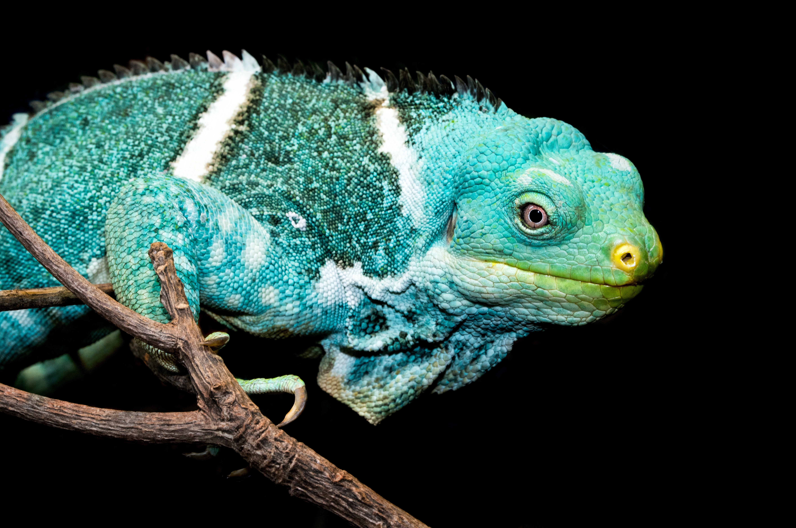
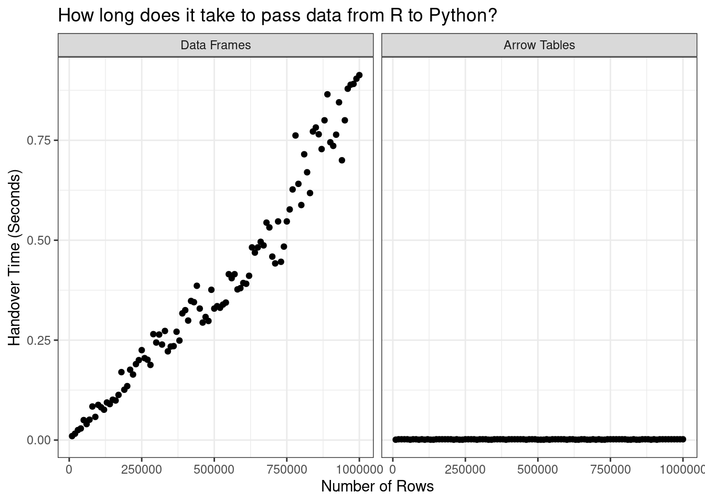

![]()
[R code]
library(tidyverse)
library(tictoc)As the 21st century gears up for its quarter-life crisis, the trend in data science is toward multi-language tools. I use quarto to write this blog, a document preparation system that supports code evaluation in R, Python, Julia, and more. My work revolves around Apache Arrow, a toolbox for data analysis and interchange with implementations in multiple languages. You get the idea. In one sense this new development is fantastic – your language of choice is much more likely to be supported in the future than it ever was in the past. In another sense it is daunting – it sometimes feels like we need to learn all the things in order to get by in this brave new world. Meanwhile we all have our actual jobs to do and we don’t have the time. In the immortal words of Bob Katter commenting on same sex marriage legislation in Australia,
I mean, you know, people are entitled to their sexual proclivities. Let there be a thousand blossoms bloom as far as I’m concerned, you know…
[pauses, expression turns dark]
…but I ain’t spending any time on it because, in the meantime, every three months a person is torn to pieces by a crocodile in North Queensland
I mean, he makes a good point? Or at least, it’s a good point about data science: I’m not convinced it was a stellar contribution to the discussion of LGBT rights in the antipodes.1 There’s a lot going on in the data science world, none of us can keep pace with all of it, and we’re all trying our best not to be eaten by crocodiles.
[R code]
library(tidyverse)
library(tictoc)
In the spirit of saving you from at least one reptilian threat, this post is a primer on how to efficiently pass control of a large data set between R and Python without making any wasteful copies of the data.
The idea to write this post emerged from a recent discussion on Twitter started by Cass Wilkinson Saldaña about passing control of a data set from R to Python, and a comment in that discussion by Jon Keane mentioning that with the assistance of Apache Arrow this handover can be made very smooth, and incredibly efficient too. Unfortunately, to be able to do this you need to know the trick, and as they regretfully mentioned in the thread, the trick isn’t well documented yet.
In time the documentation will of course improve, but in the here-and-now it seems like a good idea to explain how the magic trick works…
The “trick” is simple: if your data are stored as an Arrow Table, and you use the reticulate package to pass it from R to Python (or vice versa), only the metadata changes hands. Because an Arrow Table has the same structure in-memory when accessed from Python as it does in R, the data set itself does not need to be touched at all. The only thing that needs to happen is the language on the receiving end needs to be told where the data are stored. Or, to put it another way, we just pass a pointer across. This all happens invisibly, so if you know how to use reticulate,2 you already know almost everything you need to know and can skip straight to the section on passing Arrow objects. If you’re like Danielle-From-Last-Month and have absolutely no idea how reticulate works, read on…
If reticulate is not already on your system, you can install it from CRAN with install.packages("reticulate"). Once installed, you can load it in the usual fashion:
[R code]
library(reticulate)What happens next depends a little on whether you already have a Python set up. If you don’t have a preferred Python configuration on your machine and would like to let reticulate manage everything for you, then you can do something like this:
[R code]
install_python()
install_miniconda()This will set you up with a default Python build, managed by a copy of Miniconda that it installs in an OS-specific location that you can discover by calling miniconda_path().
The previous approach is a perfectly sensible way to use reticulate, but in the end I took a slightly different path. If you’re like me and already have Python and Miniconda configured on your local machine, you probably don’t want reticulate potentially installing new versions and possibly making a mess of things.3 You probably want to use your existing set up and ensure that reticulate knows where to find everything. If that’s the case, what you want to do is edit your .Renviron file4 and set the RETICULATE_MINICONDA_PATH variable. Add a line like this one,
[within .Renviron]
RETICULATE_MINICONDA_PATH=/home/danielle/miniconda3/where you should specify the path to your Miniconda installation, not mine 😁
Regardless of which method you’ve followed, you can use conda_list() to display a summary of all your Python environments.5 Somehow, despite the fact that I went to the effort of setting everything up, I haven’t used Python much on this machine, so my list of environments is short:
[R code]
conda_list() name python
1 base /home/danielle/miniconda3/bin/python
2 continuation /home/danielle/miniconda3/envs/continuation/bin/python
3 r-reticulate /home/danielle/miniconda3/envs/r-reticulate/bin/pythonFor the purposes of this post I’ll create a new environment that – in honour of Bob Katter and the reptilian terror in the north – I will call “reptilia”. To keep things neat I’ll install6 the pandas and pyarrow packages that this post will be using at the same time:
[R code]
conda_create(
envname = "reptilia",
packages = c("pandas", "pyarrow")
)When I list my conda environments I see that the reptilia environment exists:
[R code]
conda_list() name python
1 base /home/danielle/miniconda3/bin/python
2 continuation /home/danielle/miniconda3/envs/continuation/bin/python
3 r-reticulate /home/danielle/miniconda3/envs/r-reticulate/bin/python
4 reptilia /home/danielle/miniconda3/envs/reptilia/bin/pythonTo ensure that reticulate uses the reptilia environment throughout this post,7 I call the use_miniconda() function and specify the environment name:
[R code]
use_miniconda("reptilia")Our set up is now complete!
Now that my environment is set up I’m ready to use Python. When calling Python code from within R, some code translation is necessary due to the differences in syntax across languages. As a simple example, let’s say I have my regular Python session open and I want to check my Python version and executable. To do this I’d import the sys library:
[python code]
import sys
print(sys.version)
print(sys.executable)3.8.13 | packaged by conda-forge | (default, Mar 25 2022, 06:15:10)
[GCC 10.3.0]
/home/danielle/miniconda3/envs/reptilia/bin/pythonTo execute these commands from R, the code needs some minor changes. The import() function replaces the import keyword, and $ replaces . as the accessor:
[R code]
sys <- import("sys")
sys$version
sys$executable[1] "3.8.13 | packaged by conda-forge | (default, Mar 25 2022, 06:15:10) \n[GCC 10.3.0]"
[1] "/home/danielle/miniconda3/envs/reptilia/bin/python"The code looks more R-like, but Python is doing the work.8
Okay, now that we understand the basics of reticulate, it’s time to tackle the problem of transferring data sets between R and Python. For now, let’s leave Arrow out of this. All we’re going to do is take an ordinary R data frame and transfer it to Python.
First, let’s load some data into R. Sticking to the reptilian theme we’ve got going here, the data are taken from The Reptile Database (accessed August 31 2022), an open and freely available catalog of reptile species and their scientific classifications.9
[R code]
taxa <- read_csv2("taxa.csv")
taxa# A tibble: 14,930 × 10
taxon_id family subfa…¹ genus subge…² speci…³ autho…⁴ infra…⁵ infra…⁶ infra…⁷
<chr> <chr> <chr> <chr> <lgl> <chr> <chr> <chr> <chr> <chr>
1 Ablepha… Scinc… Eugong… Able… NA alaicus ELPATJ… <NA> <NA> <NA>
2 Ablepha… Scinc… Eugong… Able… NA alaicus ELPATJ… subsp. alaicus ELPATJ…
3 Ablepha… Scinc… Eugong… Able… NA alaicus ELPATJ… subsp. kucenk… NIKOLS…
4 Ablepha… Scinc… Eugong… Able… NA alaicus ELPATJ… subsp. yakovl… (EREMC…
5 Ablepha… Scinc… Eugong… Able… NA anatol… SCHMID… <NA> <NA> <NA>
6 Ablepha… Scinc… Eugong… Able… NA bivitt… (MENET… <NA> <NA> <NA>
7 Ablepha… Scinc… Eugong… Able… NA budaki GÖCMEN… <NA> <NA> <NA>
8 Ablepha… Scinc… Eugong… Able… NA cherno… DAREVS… <NA> <NA> <NA>
9 Ablepha… Scinc… Eugong… Able… NA cherno… DAREVS… subsp. cherno… DAREVS…
10 Ablepha… Scinc… Eugong… Able… NA cherno… DAREVS… subsp. eiselti SCHMID…
# … with 14,920 more rows, and abbreviated variable names ¹subfamily,
# ²subgenus, ³specific_epithet, ⁴authority, ⁵infraspecific_marker,
# ⁶infraspecific_epithet, ⁷infraspecific_authorityCurrently this object is stored in-memory as an R data frame and we want to move it to Python. However, because Python data structures are different from R data structures, what this actually requires us to do is make a copy of the whole data set inside Python, using a Python-native data structure (in this case a Pandas DataFrame). Thankfully, reticulate does this seamlessly with the r_to_py() function:
[R code]
py_taxa <- r_to_py(taxa)
py_taxa taxon_id ... infraspecific_authority
0 Ablepharus_alaicus ... NA
1 Ablepharus_alaicus_alaicus ... ELPATJEVSKY, 1901
2 Ablepharus_alaicus_kucenkoi ... NIKOLSKY, 1902
3 Ablepharus_alaicus_yakovlevae ... (EREMCHENKO, 1983)
4 Ablepharus_anatolicus ... NA
... ... ... ...
14925 Zygaspis_quadrifrons ... NA
14926 Zygaspis_vandami ... NA
14927 Zygaspis_vandami_arenicola ... BROADLEY & BROADLEY, 1997
14928 Zygaspis_vandami_vandami ... (FITZSIMONS, 1930)
14929 Zygaspis_violacea ... NA
[14930 rows x 10 columns]Within the Python session, an object called r has been created: the Pandas DataFrame object is stored as r.py_taxa, and we can manipulate it using Python code in whatever fashion we normally might.
It helps to see a concrete example. To keep things simple, let’s pop over to our Python session and give ourselves a simple data wrangling task. Our goal is to count the number of entries in the data set for each reptilian family using Pandas syntax:
[python code]
counts = r. \
py_taxa[["family", "taxon_id"]]. \
groupby("family"). \
agg(len)
counts taxon_id
family
Acrochordidae 3
Agamidae 677
Alligatoridae 16
Alopoglossidae 32
Amphisbaenidae 206
... ...
Xenodermidae 30
Xenopeltidae 2
Xenophidiidae 2
Xenosauridae 15
Xenotyphlopidae 1
[93 rows x 1 columns]Naturally I could have done this in R using dplyr functions, but that’s not the point of the post. What matters for our purposes is that counts is a Pandas DataFrame that now exists in the Python session, which we would like to pull back into our R session.
This turns out to be easier than I was expecting. The reticulate package exposes an object named py to the user, and any objects I created in my Python session can be accessed that way:
[R code]
py$counts taxon_id
Acrochordidae 3
Agamidae 677
Alligatoridae 16
Alopoglossidae 32
Amphisbaenidae 206
Anguidae 113
Aniliidae 3
Anomalepididae 23
Anomochilidae 3
...What’s especially neat is that the data structure has been automatically translated for us: the counts object in Python is a Pandas DataFrame, but when accessed from R it is automatically translated into a native R data structure: py$counts is a regular data frame:
[R code]
class(py$counts)[1] "data.frame"
So far we have not touched Arrow, and you might be wondering if it’s even necessary to do so given that reticulate seems so smooth and seamless. Appearances can be a little deceiving however. The example from the last section only looks smooth and seamless because the data set is small. As I’ll show later in the post, cracks in the facade start to appear when you have to pass large data sets across languages. This happens for the very simple reason that a Pandas DataFrame is a different thing to an R data frame. It’s not possible for the two languages to share a single copy of the same data object because they don’t agree on what constitutes “a data object”. The only way we can do the handover is to make a copy of the data set and convert it to a format more suitable to the destination language. When the data set is small, this is not a problem. But as your data set grows, this becomes ever more burdensome. These copy-and-convert operations are not cheap.
Wouldn’t it be nice if R and Python could both agree to represent the data as, oh let’s say…. an Arrow Table? On the R side we could interact with it using the arrow R package, and on the Python side we could interact with it using the pyarrow module. But regardless of which language we’re using, the thing in memory would be exactly the same… handing over the data set from one language to the other would no longer require any copying. A little metadata would change hands, and that’s all.
That sounds much nicer.
I’m not going to talk much about setting up arrow for R in this post, because I’ve written about it before! In addition to the installation instructions on the arrow documentation there’s a getting started with arrow post on this blog. But in any case, it’s usually pretty straightfoward: you can install the arrow R package from CRAN in the usual way using install.packages("arrow") and then load it in the usual fashion:
[R code]
library(arrow)On the Python side, I’ve already installed pyarrow earlier when setting up the “reptilia” environment. But had I not done so, I could redress this now using conda_install() with a command such as this:
[R code]
conda_install(
packages = "pyarrow",
envname = "reptilia"
)From there we’re good to go. On the R side, let’s start by reading the reptiles data directly from file into an Arrow Table:
[R code]
taxa_arrow <- read_delim_arrow(
file = "taxa.csv",
delim = ";",
as_data_frame = FALSE
)
taxa_arrowTable
14930 rows x 10 columns
$taxon_id <string>
$family <string>
$subfamily <string>
$genus <string>
$subgenus <null>
$specific_epithet <string>
$authority <string>
$infraspecific_marker <string>
$infraspecific_epithet <string>
$infraspecific_authority <string>Next let’s import pyarrow on the Python side and check the version:10
[python code]
import pyarrow as pa
pa.__version__'8.0.0'Everything looks good here too!
After all that set up, it’s almost comically easy to do the transfer itself. It’s literally the same as last time: we call r_to_py(). The taxa_arrow variable refers to an Arrow Table on the R side, so now all I have to do is use r_to_py() to create py_taxa_arrow, a variable that refers to the same Arrow Table from the Python side:
[R code]
py_taxa_arrow <- r_to_py(taxa_arrow)Since we’re in Python now, let’s just switch languages and take a peek, shall we? Just like last time, objects created by reticulate are accessible on the Python side via the r object, so we access this object in Python with r.py_taxa_arrow:
[python code]
r.py_taxa_arrowpyarrow.Table
taxon_id: string
family: string
subfamily: string
genus: string
subgenus: null
specific_epithet: string
authority: string
infraspecific_marker: string
infraspecific_epithet: string
infraspecific_authority: string
----
taxon_id: [["Ablepharus_alaicus","Ablepharus_alaicus_alaicus","Ablepharus_alaicus_kucenkoi","Ablepharus_alaicus_yakovlevae","Ablepharus_anatolicus",...,"Plestiodon_egregius_onocrepis","Plestiodon_egregius_similis","Plestiodon_elegans","Plestiodon_fasciatus","Plestiodon_finitimus"],["Plestiodon_gilberti","Plestiodon_gilberti_cancellosus","Plestiodon_gilberti_gilberti","Plestiodon_gilberti_placerensis","Plestiodon_gilberti_rubricaudatus",...,"Zygaspis_quadrifrons","Zygaspis_vandami","Zygaspis_vandami_arenicola","Zygaspis_vandami_vandami","Zygaspis_violacea"]]
family: [["Scincidae","Scincidae","Scincidae","Scincidae","Scincidae",...,"Scincidae","Scincidae","Scincidae","Scincidae","Scincidae"],["Scincidae","Scincidae","Scincidae","Scincidae","Scincidae",...,"Amphisbaenidae","Amphisbaenidae","Amphisbaenidae","Amphisbaenidae","Amphisbaenidae"]]
subfamily: [["Eugongylinae","Eugongylinae","Eugongylinae","Eugongylinae","Eugongylinae",...,"Scincinae","Scincinae","Scincinae","Scincinae","Scincinae"],["Scincinae","Scincinae","Scincinae","Scincinae","Scincinae",...,null,null,null,null,null]]
genus: [["Ablepharus","Ablepharus","Ablepharus","Ablepharus","Ablepharus",...,"Plestiodon","Plestiodon","Plestiodon","Plestiodon","Plestiodon"],["Plestiodon","Plestiodon","Plestiodon","Plestiodon","Plestiodon",...,"Zygaspis","Zygaspis","Zygaspis","Zygaspis","Zygaspis"]]
subgenus: [11142 nulls,3788 nulls]
specific_epithet: [["alaicus","alaicus","alaicus","alaicus","anatolicus",...,"egregius","egregius","elegans","fasciatus","finitimus"],["gilberti","gilberti","gilberti","gilberti","gilberti",...,"quadrifrons","vandami","vandami","vandami","violacea"]]
authority: [["ELPATJEVSKY, 1901","ELPATJEVSKY, 1901","ELPATJEVSKY, 1901","ELPATJEVSKY, 1901","SCHMIDTLER, 1997",...,"BAIRD, 1858","BAIRD, 1858","(BOULENGER, 1887)","(LINNAEUS, 1758)","OKAMOTO & HIKIDA, 2012"],["(VAN DENBURGH, 1896)","(VAN DENBURGH, 1896)","(VAN DENBURGH, 1896)","(VAN DENBURGH, 1896)","(VAN DENBURGH, 1896)",...,"(PETERS, 1862)","(FITZSIMONS, 1930)","(FITZSIMONS, 1930)","(FITZSIMONS, 1930)","(PETERS, 1854)"]]
infraspecific_marker: [[null,"subsp.","subsp.","subsp.",null,...,"subsp.","subsp.",null,null,null],[null,"subsp.","subsp.","subsp.","subsp.",...,null,null,"subsp.","subsp.",null]]
infraspecific_epithet: [[null,"alaicus","kucenkoi","yakovlevae",null,...,"onocrepis","similis",null,null,null],[null,"cancellosus","gilberti","placerensis","rubricaudatus",...,null,null,"arenicola","vandami",null]]
infraspecific_authority: [[null,"ELPATJEVSKY, 1901","NIKOLSKY, 1902","(EREMCHENKO, 1983)",null,...,"(COPE, 1871)","(MCCONKEY, 1957)",null,null,null],[null,"(RODGERS & FITCH, 1947)","(VAN DENBURGH, 1896)","(RODGERS, 1944)","(TAYLOR, 1936)",...,null,null,"BROADLEY & BROADLEY, 1997","(FITZSIMONS, 1930)",null]]The output is formatted slightly differently because the Python pyarrow library is now doing the work. You can see from the first line that this is a pyarrow Table, but nevertheless when you look at the rest of the output it’s pretty clear that this is the same table.
Easy!
Right then, what’s next? Just like last time, let’s do a little bit of data wrangling on the Python side. In the code below I’m using pyarrow to do the same thing I did with Pandas earlier: counting the number of entries for each reptile family.
[python code]
counts_arrow = r.py_taxa_arrow. \
group_by("family"). \
aggregate([("taxon_id", "count")]). \
sort_by([("family", "ascending")])
counts_arrowpyarrow.Table
taxon_id_count: int64
family: string
----
taxon_id_count: [[3,677,16,32,206,...,2,2,15,1,5]]
family: [["Acrochordidae","Agamidae","Alligatoridae","Alopoglossidae","Amphisbaenidae",...,"Xenopeltidae","Xenophidiidae","Xenosauridae","Xenotyphlopidae",null]]Flipping back to R, the counts_arrow object is accessible via the py object. Let’s take a look:
[R code]
py$counts_arrowTable
93 rows x 2 columns
$taxon_id_count <int64>
$family <string>The output is formatted a little differently because now it’s the R arrow package tasked with printing the output, but it is the same Table.
Mission accomplished!
But… was it all worthwhile?
At the end of all this, you might want to know if using Arrow makes much of a difference. As much as I love learning new things for the sheer joy of learning new things, I prefer to learn useful things when I can! So let’s do a little comparison. First, I’ll define a handover_time() function that takes two arguments. The first argument n specifies the number of rows in the to-be-transferred data set. The second argument arrow is a logical value: setting arrow = FALSE means that an R data frame will be passed to Python as a Panda DataFrame, wheras arrow = TRUE means that an Arrow Table in R will be passed to Python and remain an Arrow Table. The actual data set is constructed by randomly sampling n rows from the taxa data set (with replacement):
[R code]
handover_time <- function(n, arrow = FALSE) {
data_in_r <- slice_sample(taxa, n = n, replace = TRUE)
if(arrow) {
data_in_r <- arrow_table(data_in_r)
}
tic()
data_in_python <- r_to_py(data_in_r)
t <- toc(quiet = TRUE)
return(t$toc - t$tic)
}Now that I’ve defined the test function, let’s see what happens. I’ll vary the number of rows from 10000 to 1000000 for both the native data frame version and the Arrow Table version, and store the result as times:
[R code]
times <- tibble(
n = seq(10000, 1000000, length.out = 100),
data_frame = map_dbl(n, handover_time),
arrow_table = map_dbl(n, handover_time, arrow = TRUE),
)Now let’s plot the data:
[R code]
times |>
pivot_longer(
cols = c("data_frame", "arrow_table"),
names_to = "type",
values_to = "time"
) |>
mutate(
type = type |>
factor(
levels = c("data_frame", "arrow_table"),
labels = c("Data Frames", "Arrow Tables")
)
) |>
ggplot(aes(n, time)) +
geom_point() +
facet_wrap(~type) +
theme_bw() +
labs(
x = "Number of Rows",
y = "Handover Time (Seconds)",
title = "How long does it take to pass data from R to Python?"
)
Okay yeah. I’ll be the first to admit that this isn’t a very sophisticated way to do benchmarking, but when the difference is this stark you really don’t have to be sophisticated. Without Arrow, the only way to hand data from R to Python is to copy and convert the data, and that’s time consuming. The time cost gets worse the larger your data set becomes. With Arrow, the problem goes away because you’re not copying the data at all. The time cost is tiny and it stays tiny even as the data set gets bigger.
Seems handy to me?
Thank you to Marlene Mhangami and Fernanda Foertter for reviewing this post.
That being said, it wasn’t the worst comment on same sex marriage I saw an Australian politician make at the time, not by a long margin.↩︎
Something to note here is that the reticulate solution implicitly assumes R is your “primary” language and Python is the “secondary” language. That is, reticulate is an R package that calls Python, not a Python module that calls R. Simularly, this quarto document uses the knitr engine (also an R package) to integrate code from the two languages. Yes the tools are multi-language, but the setup is pretty R-centric. Arguably this is typical for how an R user would set up a multi-language project, and since R is my primary language it’s my preferred solution. However, it’s not a particularly Pythonic way of approaching the problem. But fear not, Python fans. In the next post I’m going to describe an approach that solves the same problem in a Python-centric way.↩︎
Okay, in the spirit of total honesty… when I first started using reticulate I actually did let reticulate install its own version of Miniconda and everything was a total mess there for a while. My bash profile was set to find my original version of Miniconda, but reticulate was configured to look for the version it had installed. Hijinx ensued. As amusing as that little episode was, I’m much happier now that reticulate and bash are in agreement as to where Miniconda lives.↩︎
The easiest way to edit this file, if you don’t already know how, is to call usethis::edit_r_environ() at the R console.↩︎
Well, all the Conda environments anyway↩︎
You can also use conda_install() to install into an existing conda environment.↩︎
Okay, I should unpack a little. This blog is written using quarto, and in this post I’m using knitr as the engine to power the evaluation of code chunks. The knitr R package relies on reticulate when it needs to execute Python code. What that means is that code chunks labelled “Python code” in this post are implicitly executed using the same interface (reticulate) as the examples that I am explicitly calling when some of my “R code” chunks use reticulate in a more obvious way. When I call use_miniconda() here it specifies the Python environment used by reticulate in this R session, irrespective of which “path” I use. In other words, the “Python code” chunks and the explicit calls to reticulate functions are all executed with the same Python environment (reptilia) because they occur within the same R session.↩︎
As an aside it’s worth noting that reticulate exports an object called py, from which Python objects can be accessed: the sys object can also be referred to as py$sys.↩︎
Note that the website does not explicitly specify a particular licence, but journal articles documenting the database written by the maintainers do refer to it as “open and freely available”. With that in mind I take it that the use of the data in this post is permitted. Naturally, should I discover that it is not I’ll immediately remove it!↩︎
As an aside – because I’m on on linux and life on linux is dark and full of terrors – this didn’t actually work for me the first time I tried it, and naturally I was filled with despair. Instead, I received this: libstdc++.so.6: version 'GLIBCXX_3.4.22' not found. As usual, googling the error message solved the problem. I updated with sudo apt-get install libstdc++6, and another catastrophe was thereby averted by copy/pasting into a search engine 🙃↩︎
@online{navarro2022,
author = {Navarro, Danielle},
title = {Passing {Arrow} Data Between {R} and {Python} with
Reticulate},
date = {2022-09-09},
url = {https://blog.djnavarro.net/posts/2022-09-09_reticulated-arrow},
langid = {en}
}